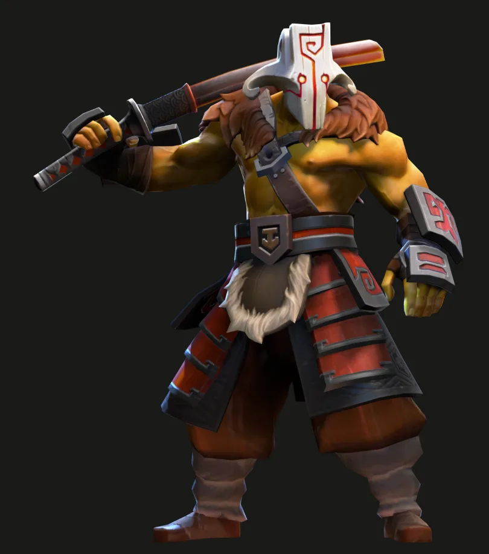
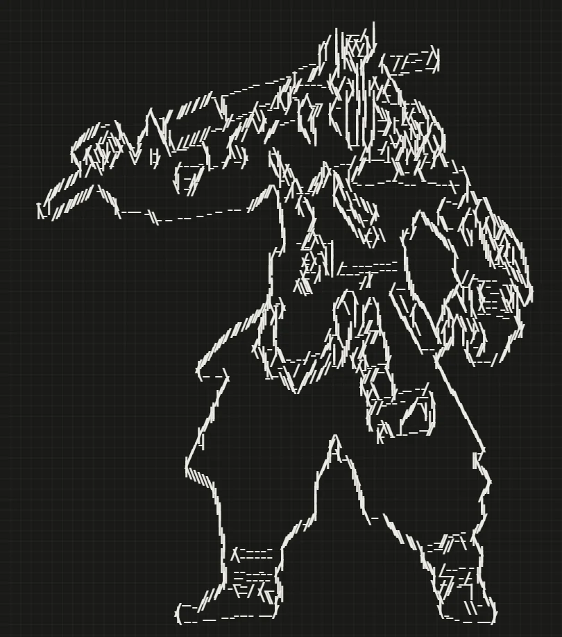
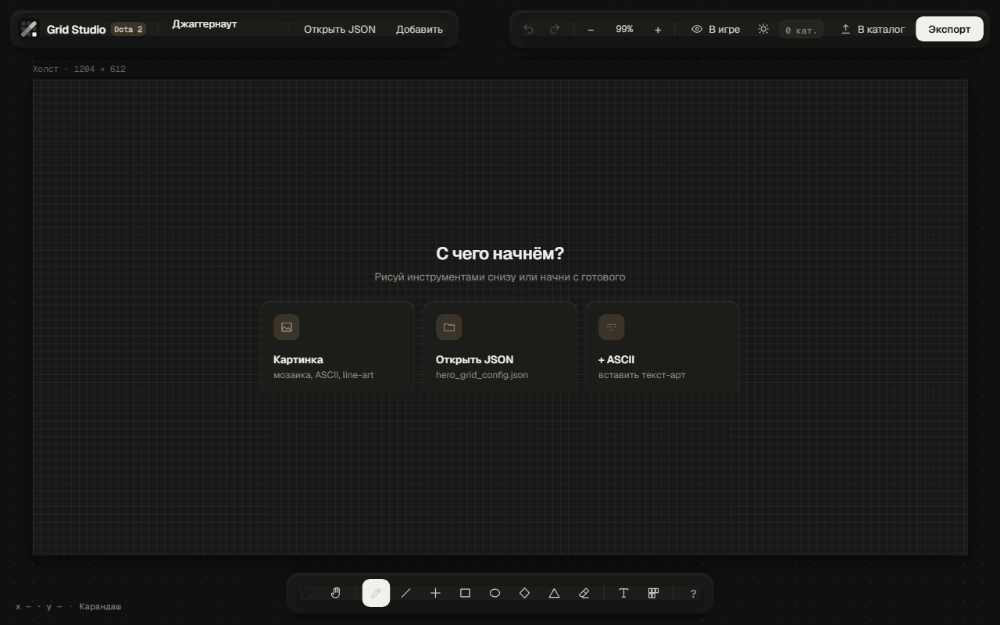
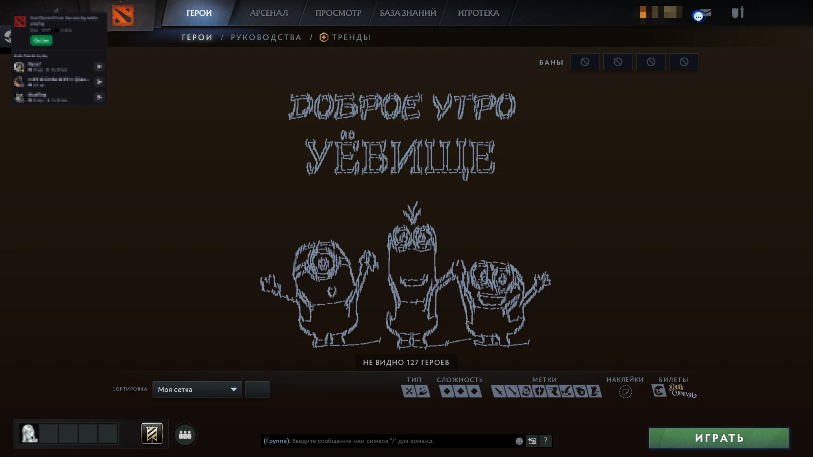

КартинкаСеткаКартинка → line-artКонтуры через Canny, как в Photoshop. Символы сами поворачиваются по линии:
- \ | /. Потяни ползунок.Grid Studio — сайт, на котором вы можете создать свою сетку героев, используя встроенные инструменты и своё воображение.



КартинкаСетка- \ | /. Потяни ползунок.
Сетки, которые выложили игроки. Открой любую в редакторе и доработай под себя.
Открой редактор, вставь картинку — и заходи в Доту с новой сеткой.